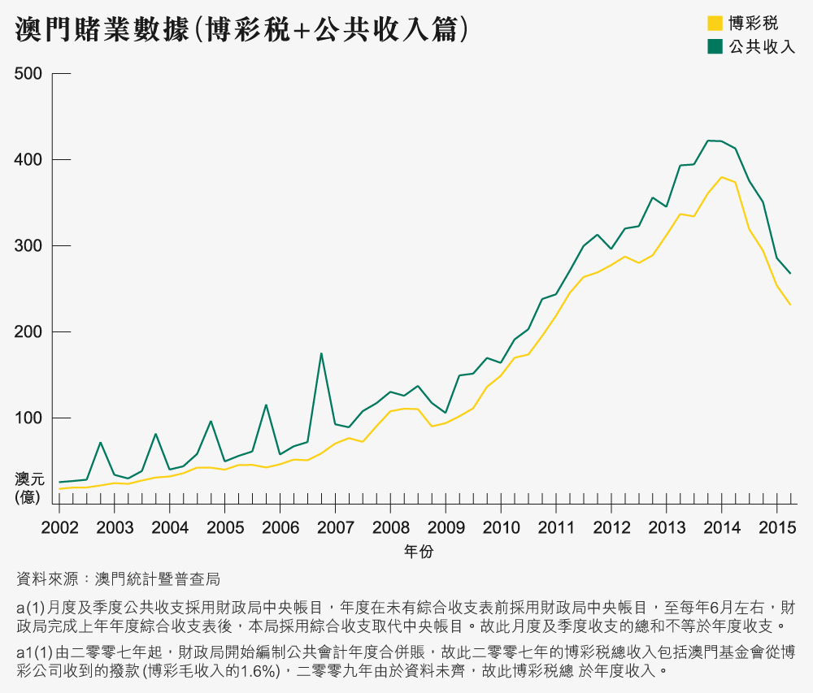
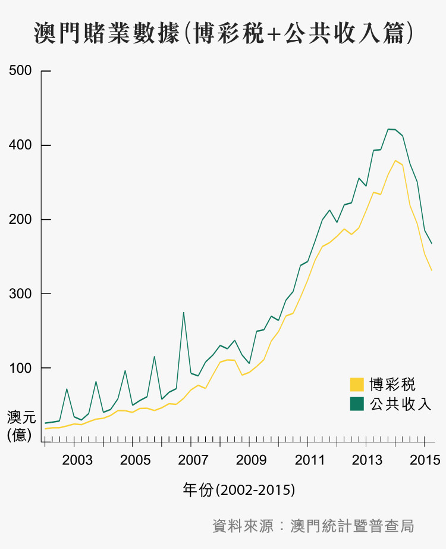
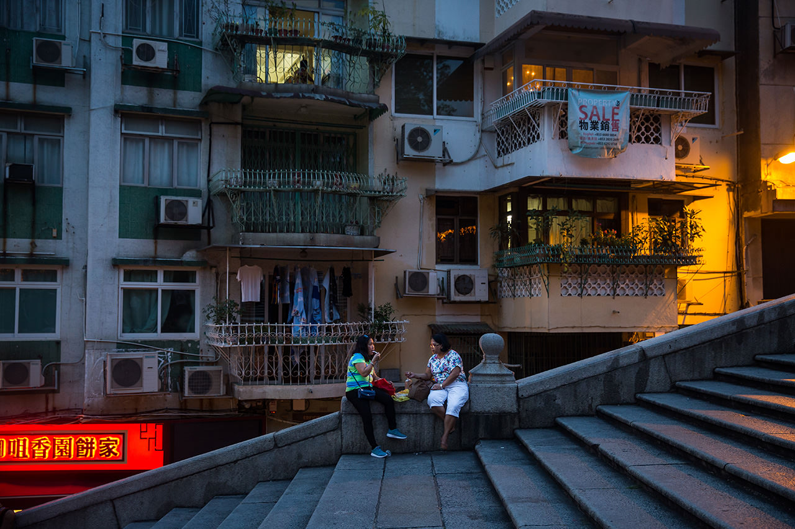
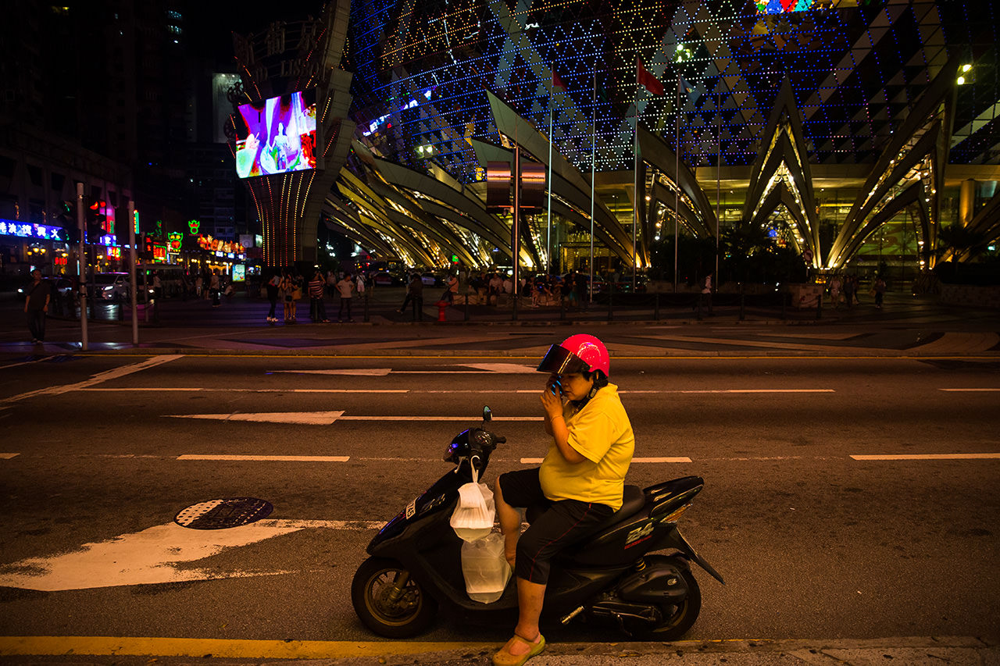
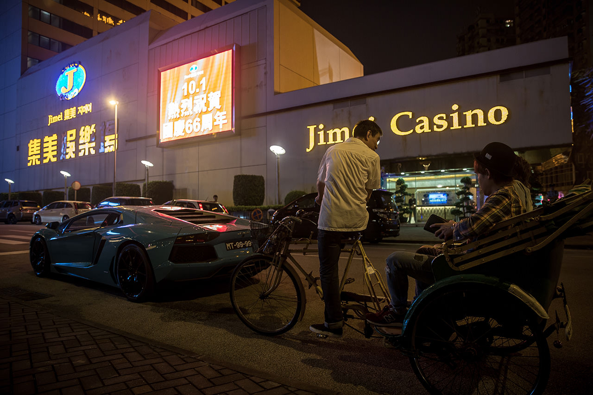
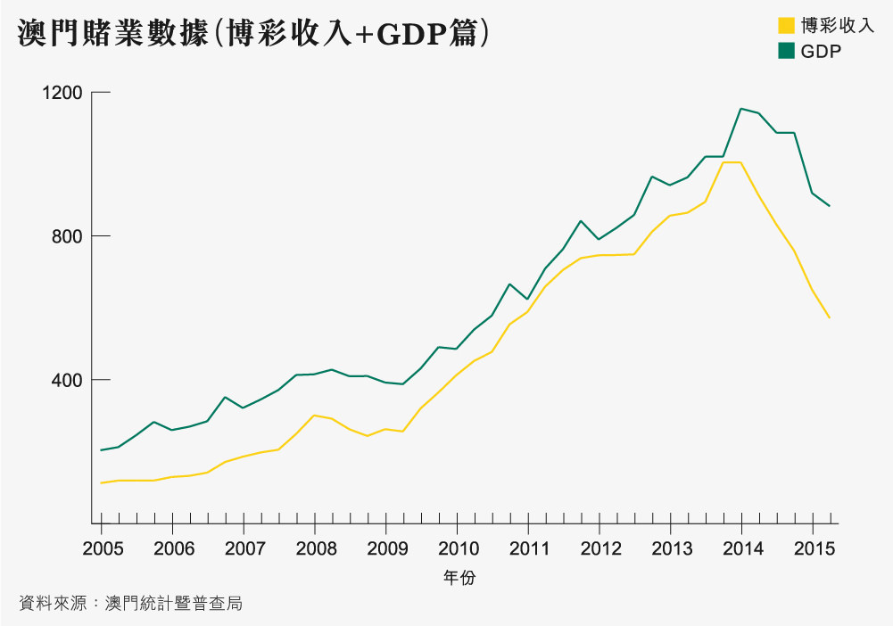
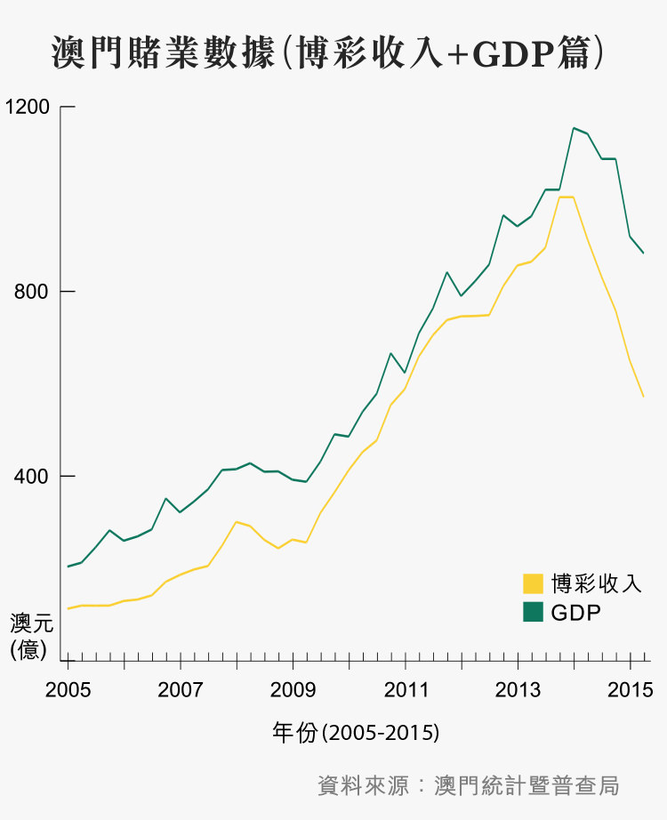
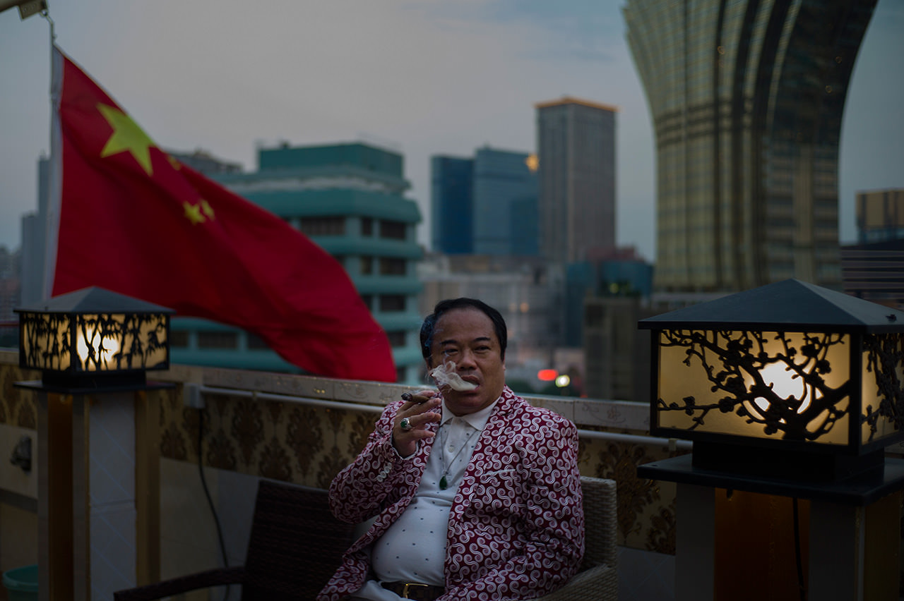
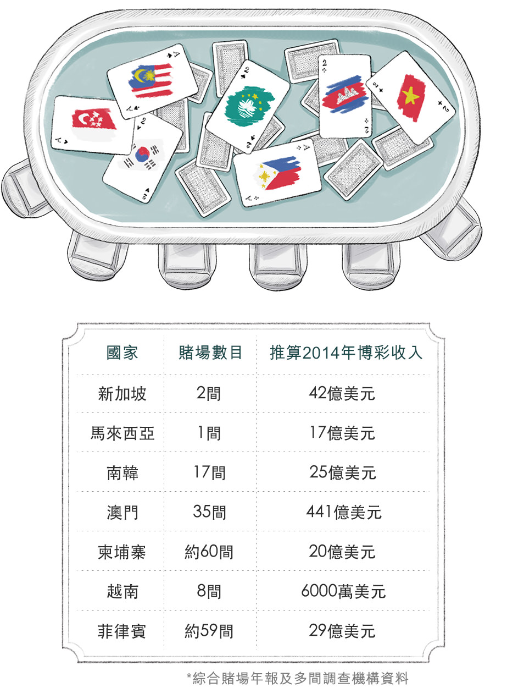
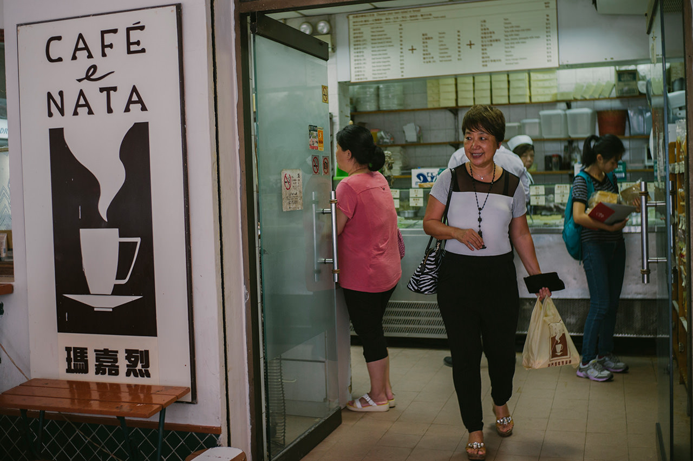

2002
- 2002
- 2004
- 2006
- 2007
- 2009
- 2011
- 2015
圖：Sarene Chan／端傳媒
說到澳門，大概九成人都會想到賭業。百家樂、買大小、廿一點，這些大家都可能熟悉，但在貴賓廳中一局下注數千萬元，一晚輸贏10億元的世界，你我或許難以想像。
澳門人靠賭養家，澳門靠賭業興邦。小城將自己的命運押注這場賭局，籌碼近日卻悄然換上內地打貪、外圍經濟不明及周邊競爭加劇。 煙花照耀下，黃金依然看似遍地，但澳門人都知道，小城正在揚起變奏，就像2009年被列入聯合國人類非物質文化遺產的一段南音……
往下閱讀
PART 1賭城變遷，由的士司機說起
過去數年，澳門市民和遊客都說「截的士難」。難，因為的士司機不愁生意，拒載、不按錶收費一度成為常態，但當賭業崩圍，的士生態也再度調整。端傳媒訪問從來不乘的士的金麟貴賓會總經理何大志，又邀請的士司機 Sam哥，接載美聯物業澳門行政總裁張一輝、瑪嘉烈葡撻店主Margaret暢遊澳門，聽他們細說賭城故事。
PART 2 賭廳倒閉，賭業面臨大整肅
遊客在葡京娛樂場外。
過往大半年，澳門商人何大志親眼看着自己一手創建的賭廳一間接一間倒閉。在澳門賭業高峰的2013年，他一人掌管6間賭廳，現時一間不剩。
「以前我們是拉客賭錢，現在變成債主，天天追數。」何大志坐在私人防彈車，一邊載着記者在鄰近賭場的澳門皇朝區遊車河，一邊接受端傳媒記者訪問：「我現在未追回的賭債，大約5億元。」
在約64萬人口的澳門，何大志的故事是賭業衰落的縮影。從2013年第4季起，澳門賭業由高峰直插谷底。當時每月賭收都高於300億元（澳門元，下同），但其後賭收連續15個月下跌，才不過一年多，賭收滑落到每月不足200億元，蒸發超過三分之一。
澳門政府10月20日公布，2015年第二季博彩收入，佔本地生產總值降至64.7%，為6年以來最低。


a(1) 月度及季度公共收支採用財政局中央帳目，年度在未有綜合收支表前採用財政局中央帳目，至每年6月左右，財政局完成上年年度綜合收支表後，本局採用綜合收支取代中央帳目。故此月度及季度收支的總和不等於年度收支。
a1 (1) 由二零零七年起，財政局開始編制公共會計年度合併帳，故此二零零七年的博彩稅總收入包括澳門基金會從博彩公司收到的撥款(博彩毛收入的1.6%)，二零零九年由於資料未齊，故此博彩稅總於年度收入。
十一不再黄金 賭廳廳主悲歌奏起
每年中國大陸的十一國慶黃金週，都是澳門賭業的黃金期。然而今年10月1日，當煙花在馬交海面亮起，從賭業大亨、貴賓廳廳主、賭場荷官到普通市民，都開始感受到今年煙花特別暗淡。一連六天的黃金週，端傳媒記者到澳門實地觀察，也看到賭場人流比往年大幅減少。
在永利澳門娛樂場，每局最少投注1000元的「百家樂」賭枱無人問津，即便是300元以下的低注碼賭枱，賭客只有三三兩兩，與之以往數十人圍着一張賭枱的情況大相徑庭。
10月16日，美國賭業大亨、澳門博彩企業「永利澳門」（港交所編號：1128）主席史提芬永利（Stephen A. Wynn）公布了集團第三季業績，純利大跌71.9%，他少有地以沉重聲線道：「上一季度的業績，一如我們對上幾個季度所看到的，就是失去了接近一半的貴賓廳業務，更甚的是，業務可能仍在收縮⋯⋯」2014年，永利在澳門博彩業的市佔率為9.2%，另外5間澳門博企包括美高梅、新濠博亞娛樂（新濠博亞）、金沙、銀河娛樂（銀娛）及澳門博彩控股（澳博），除了銀娛的貴賓廳業務按年上升一成外，其餘四間都分別錄得超過一成的跌幅，金沙貴賓廳業務跌勢最急，按年倒退超過兩成。
「今年黃金週，貴賓廳幾乎都沒有人來賭錢。」何大志是澳門「金麟貴賓會」的老闆，他早在1979年開始在澳門經營賭廳，在2010至2013年高峰期時獨資經營六個貴賓廳，全部位於美高梅娛樂場、星際娛樂場及新葡京娛樂場。
「當時6個貴賓廳加起來，每年『轉碼額』高達3000億元。」何大志回憶。
「轉碼額」是澳門賭業術語。澳門賭場分為中場和貴賓廳，以注碼大小劃分。中場是賭場中針對大眾市場的業務，賭注大眾化，由數百至數千元不等，主要吸納一般旅客和澳門市民下注。貴賓廳的賭客則主要是投注額較大的客戶，例如來自內地的闊綽遊客。
賭客到貴賓廳賭錢，賭額動輒數百萬元，下注前亦必須先購買「泥碼」，俗稱「叠碼仔」的博彩中介人，拉攏賭客兌換泥碼，可以從中獲得佣金。這種籌碼只可用作投注，而不能兌換現金，賭客只可以透過在賭枱上贏得的現金碼，才可以換取現金。賭客向貴賓廳購買「泥碼」的過程，行內稱為「轉碼」，何大志說的「轉碼額」，就是他經營的貴賓廳，兌換予賭客的泥碼數額。
何大志表示，貴賓廳的投注額比中場大得多，賭客每次下注一、二百萬也很平常。何大志最高錄得的一年轉碼額有3000億元，而根據公司年報，經營葡京和新葡京等賭場的澳博，2013年貴賓廳轉碼額是全澳最高的，全部貴賓廳的轉碼額，加起來約為20000億元。而中場投注額則只有400億，可見貴賓廳業務對各家賭場有多重要。
然而，從去年開始，這類豪客已經大幅減少：「貴賓廳的生意少了三分之二，我估計在中央的緊縮政策下，錢走進澳門不再那麼方便。」何大志含着雪茄，徐徐呼出煙圈，唏噓地說。

兩名市民在大三巴前的階梯旁休息。
賭廳倒閉 賭場不找錢
澳門賭業收縮，何大志的賭廳也從2014年底開始，陸續結束營業。何大志向記者出示一批約值150萬元的泥碼。這是2014年11月，位於新葡京娛樂場2樓的「金麟貴賓廳」結業時剩下的部分泥碼。他要求澳博將他手上的泥碼兌回現金，但卻遭到對方拒絕。何大志不忿說：「澳博堅持要等他們檢查賭場帳目，但其實每個貴賓廳都用真金白銀買入泥碼，結業時都可以兌換現金。」
何大志至今仍未追回款項，他已經報警求助，希望從司法途徑向澳博取回現金。他覺得事件反映一個現實——賭廳不斷倒閉，博彩企業及公司亦正面臨前所未有的財政危機：「他們這一點點錢也不願兌回，可見現金流情況及財政問題肯定非常嚴重。」有30年賭業經驗的何大志推斷說。
何大志笑言，以前賭廳的主要工作是拉客賭錢，現在他們的主要工作變成債主追回欠款：「我們現在的主業變為『收數（追債）』，經濟好時，大部分客人欠下賭債都有借有還，現在很多內地賭客，借了錢卻去如黃鶴，雖說簽了借據，但由於內地政府不承認欠單，只要『債仔』（借貸人）置諸不理，借據就失去效力。」
何大志派往內地討債的職員，甚至被借貸人暴力對待，欠款也無從追回：「以往生意好，討不回的欠債可以用利潤補回，現在根本沒有人來賭，於是賭廳紛紛倒閉。」何大志現時一間賭廳也沒有了，他打算放棄賭業，從事內地農產品交易生意。何大志承認自己在這個澳門賭盤上變成輸家，但他相信輸家陸續有來。

新葡京酒店與葡京娛樂場之間的馬路，一位外賣員在摩托車上聊電話。
多金事件
這一場澳門賭業危機，正如何大志所言，正一直蔓延，不只是賭主賭客，甚至波及普通市民。
2015年9月，根據《彭博》報導，在永利澳門旗下娛樂場經營貴賓廳的多金集團，有貴賓廳主管虧空20億元潛逃，震撼業界。
9月11日，多金集團在消息曝光後發表聲明，指稱一名前帳房總監「進行未經允許的事情，嚴重影響公司利益及聲譽，並涉及欺詐」。雖然未有確認虧空數額，但事件曝光後，大批賭客及市民到賭廳提取存款，但都無法取回。
原來以往賭廳會提供高息，吸引賭客或市民，透過疊碼仔將大筆款項寄存在賭廳。何大志說：「以往有一些賭廳利息高達兩厘，完全不健康。他們吸納的客戶，多是不了解情況的內地賭客。很多賭廳根本不夠資金償還利息，會將客人存款轉借其他賭客，賭客再將借貸輸掉，賭廳便能藉此大撈一筆。」
多金事件被虧空的款項，據悉部分正是這類存款。9月24日，40多名賭客在永利酒店門外，舉起「貴賓廳無法無天，詐騙客戶存款」的橫額抗議，又到多個政府部門遞交請願信及報警求助。
輿論都希望政府立法規管，保障貴賓廳借貸合約。經濟財政司司長梁維特9月22日表示，將會制定指引，希望業界遵守，但被問及何時發出指引時，梁維特沒有正面回應：「大家都知道我們沒有偷懶，很努力開會。」

澳門賭場外面的大螢幕放映著「熱烈慶祝國慶66週年」，兩位韓國旅客坐著人力車，在跑車前停下。
賭業收縮 是時候整肅？
「如果博彩業仍然好景，這些事件根本不會被揭露，貴賓廳業績疲弱，令多金事件暴露人前，但我覺得這只是遲早會出現的問題。」澳門大學政府與行政學系助理教授陳建新說。
他認為當這些漏洞一一浮現時，正標誌着澳門博彩業需要正式作規範化發展：「最近的低迷情況，令政府可以將一些過往不被留意的問題規範化，我反而覺得是好事。一直賺大錢，沒有問題發生，政府就很難介入或下定決心要求業界改變。正如98年金融風暴，當年對香港也有很大影響，之後連續數年通縮，經濟也出現負增長。但回頭看，正因為有這次事件，才將以往一些不正常行徑糾正了。」
致富證券負責分析濠賭股的分析員關凱威亦有類同說法，他接受端傳媒訪問時表示：「賭廳現在處於汰弱留強階段，我覺得多金事件反而是一個機會，讓澳門賭廳取得平衡點。」
轉營中場
政府開始立案規範，博企亦開始內部調整，以圖扭轉頽勢。
以往博企都側重貴賓廳業務，主力拉攏賭注數以百萬元計的豪客。現時澳門的六間博彩企業，大部分都是貴賓廳收入佔比較高，以2014年底的數據為例，銀娛75%的收入都是來自貴賓廳。但現時貴賓廳轉碼額明顯下降，有五家博企都錄得超過一成跌幅。分析員劉志斌說：「澳門賭場必須轉營，部分博企正落力發展『中場』和非博彩業務。」
在發展「中場」業務方面，金沙顯然走得較快，在2014年第二季，其中場收入已經超越貴賓廳。而金沙全年的中場收益，高達381億港元，佔金沙業務收益52.6%。其餘五間博企在貴賓廳的收入，則仍然佔較大比重，大約佔五至六成。
若以投注額計算，金沙的中場業務也明顯較佳，去年金沙的中場投注額，達到1700億港元，比銀娛、新濠博亞、永利、美高梅四家博企的總和還要高。10月22日，「金沙中國」主席艾德森公布季度業績時亦說，金沙的中場的業務穩定。
澳門政府經濟財政司司長梁維特，10月20日接受傳媒訪問時指，27日開業的新濠影匯，已獲批250張賭枱，將全部設於「中場」，成為澳門首個沒有貴賓廳的大型賭場。除了新濠影匯，銀河二期最近獲批的賭枱，亦將全部設在中場。銀娛表示，期望博彩企業可扶助當地中小企及發展家庭娛樂。


一榮俱榮 一輸全輸
澳門只有31平方公里、人口約64萬，是中國境內唯一可以合法經營賭場的地方。正因如此，澳門一直長期依賴博彩業生存。澳門賭業源遠流長，1847年澳葡政府將澳門賭博合法化，至1930年，澳門明確博彩專營權，專營權下第一個澳門賭場應運而生。2002年，澳門開放賭權，外資公司進軍澳門博彩業，賭場由11間急升到35間，博彩業收益如井噴一樣急升。博彩稅收益佔政府公共收入比率，由2002年約五成上升到2014年的八成。庫房水浸的澳門政府，連年向市民派錢，澳門市民親身感受到博彩業帶來的好處。
然而，當今日賭業寒冬嚴重影響澳門經濟，整個社會似乎都受到影響，全因澳門大部分人都依靠賭業餬口。截至今年第二季，澳門有超過5萬7千人是博彩業全職僱員，佔澳門就業人口兩成，平均五名在職人士中，有一人以博彩業維生。而的士、餐飲、零售等多個行業，全都與賭業息息相關。賭場員工在內的30名氹仔王府飯店職員，10月20日示威抗議欠薪。一時之間，澳門經濟的不景氣躍進眼簾，澳門人開始明白，賭桌上數以萬億元計的注碼，能將小城捧上天，亦能令澳門陷入危機。
「新澳門學社」前理事長蘇嘉豪對端傳媒說，澳門的問題在於產業極度單一化：「所有行業只要連帶着博彩業，都可以在市場上分一杯羹，但是一旦脫離了博彩業，產業和中小企業都無法生存。當賭業有任何風吹草動，澳門無法經得起財政波動，政府的收入會受到很大的衝擊，對民生也有很大的影響。以前大家沉醉在這個龍頭產業帶來的好處，當現在稍為回落的時候，這問題便陸續浮現，這是政府和市民都不能迴避的經濟結構危機。」
2015年7月1日，中國當局放寬內地人過境澳門規定，由5日提升到7日。而今年十一黃金周，到訪澳門的內地旅客數字，達到破紀錄的90萬人次，比往年上升7%。致富分析員劉志斌說：「這算是近期一個利好消息，但澳門賭收暫時仍未見起色，9月只有大約170億元，趨勢仍然繼續下降，看不到明顯的復甦。」
澳門聯合博彩研究的分析師Grant Govertsen，日前接受英國《金融時報》採訪稱，目前環境下，賭場以新供應推動市場增長，仍然會很困難。
「希望澳門政府可以改善賭業環境，以前殖民時代，葡國佬來這裏只為賺錢，我們不會指望他們解決問題；現在是當家作主的時代，政府應該更積極解決賭業面對的難關。」廳主何大志落寞地說。

賭廳廳主何先生。
PART 3黃金周，黃金不再
2015年10月1日，澳門上空又再發放煙花。這是澳門每年一度的國際煙花比賽匯演，澳門市民和遊客多會聚集在永利賭場旁的南灣湖畔欣賞這盛事。不過今年的澳門煙花卻似乎沒有以往的燦爛。
十一黃金周，一向是澳門的士司機王申賺錢的黃金檔期。然而，剛過去這個黃金周，雖然當局公布今年遊澳的內地旅客人次破紀錄的90萬，但王申眼中，今年卻是罕有的冷清，他算一算，生意少了兩至三成：「以往的黃金周，議事亭前都迫滿遊客，有時人多得要實施人潮管制，今年就不用了，根本沒有人。」永利和葡京賭場門外的的士站，也不再看到乘客搶搭的士，罕有地出現「車等人」的情景。
貴賓廳廳主何大志表示，以往黃金周澳門酒店房間緊張，賭場會以較高價格預留房間予賭廳，以便他們招待VIP賭客：「黃金周酒店房價可以搶高至最少五千元，今年卻不用預留了，上網隨時都可以訂到，而且只要千多元。」
傳媒報道今年黃金周期間，三星級至五星級酒店，平均入住率約八成六。酒店房價下降近兩成二，平均約一千四百多元一晚。
何大志又說，他在黃金期間，到一間賭場內的高級食肆吃飯，食肆經理竟問他可否幫忙多訂兩桌：「他走過來跟我說，何生幫幫忙吧，帶多些人來吃飯吧。以往賭客贏錢，就到這些中菜廳，點最貴的菜色，現時呢﹖沒有豪客到賭場，連食肆經理都跑不夠數。」而在賭場內外的奢侈品店也沒有搶買情形，更多的只在櫥窗外散步；連路邊小攤，店主也在打呵欠。
的士駛到永利賭場門外，王申把的士泊好，街上卻只有疏疏落落的遊客。端傳媒記者問王申有沒有為生計及未來擔心呢﹖他很有澳門精神地回答說：「不怕，我想中央應該會照顧澳門的。」
PART 4 大賭興邦，亞洲賭業大洗牌
傍晚的大三巴，大三巴牌坊是來澳遊客必到的景點之一。
在澳門土生土長的Margaret，1989年在澳門路環開了第一間小餅店，自此成為澳門最著名葡撻店的老闆娘。她特製的澳門葡撻，是不少旅客到澳門必買的手信。近年賭業急速發展，越來越多旅客到來，Margaret的葡撻店也受惠。
「小賭養家活口，大賭興邦立國」—— 澳門人有這句順口溜，正是這個小城故事的寫照。Margaret與女兒的兩間葡撻店，分別位於澳門半島和路環，往來兩間店舖，都一定會經過氹仔。Margaret每次坐車經過，看見氹仔到處都是地盤，多個新賭場的興建工程正如火如荼，心裡總有疑問：「可否不要再發展那麽多賭場﹖到底有沒有那麽多人來賭呢﹖」

其他賭場搶客
Margaret的疑問其實不無道理。隨着內地政府打貪，中國經濟收縮，澳門博彩收入自2014年開始銳減。同一時間，近年亞洲其他地區賭場紛紛落成，亦分薄了部分客源。
2002年開放賭權以後，澳門迎來黃金10年。世界銀行2014年數據顯示，澳門人均GDP達到96038美元，較新加坡的五萬六千多美元，及香港的四萬美元還要高，成為亞洲首位。澳門以賭興邦的成功經驗，成為了不少亞洲地區參考的對象，爭相以開賭作為經濟發展新動力。
當中，新加坡是最典型例子。新加坡在2010年開賭，雲頂新加坡旗下的聖淘沙名勝世界，除了賭場外，還有主題公園及不同遊樂設施，吸引家庭旅客。而金沙旗下的濱海灣金沙娛樂城，則有大型會展設施和博物館等，主打商務旅客。新加坡去年的入境旅客人次，達到1510萬，較2009年賭場開幕前的970萬，上升55.7%。而兩個賭場的博彩收入，去年超過四十二億美元，佔GDP 1.4%。
遊客在名牌店的燈光幕牆前等待國慶煙花。
南韓開賭 做大個餅？
新加坡業務轉趨平穩，雲頂集團進一步夥拍香港藍鼎國際，進軍已有17間賭場的南韓，在濟洲島興建賭場渡假村，擴大亞洲賭業版圖。
藍鼎國際發展投資關係部經理彭靖欣接受端傳媒專訪時說：「渡假村有大型賭場，但也有包括七個區域的主題公園、會展設施、酒店和住宅等，預計將於2017年逐步開幕。濟洲現時沒有其他類似的旅遊設施，我們相信將來旅客到濟洲旅遊，都一定會到我們的渡假村玩樂。」
根據南韓法規，全國只有一間賭場，容許南韓國民賭博，其餘16間以及新開的賭場，都只對旅客開放。彭靖欣坦白表示，渡假村目標正是中國市場：「很多中國人喜歡賭博，隨着中國人越來越富裕，會有更多人有能力出國旅遊和賭博，而北京和上海等一線城市，乘飛機到濟洲，才不過一小時就到。」她認為中國旅遊賭博的滲透率仍然很低，市場有很大增長空間。
興建中的澳門巴黎人艾菲爾鐵塔。
現時韓國16間賭場，中國賭客約佔八成。近日澳門賭業負面消息不斷，貴賓廳收入大幅下降，有指是中國經濟向下，及打貪令賭客大減，這會否影響藍鼎的部署呢﹖彭靖欣表示，集團早前收購濟洲一個小型賭場，翻新後在2015年1月開幕，共有26張賭枱，包括貴賓廳和中場業務。開業大半年，賭場大部分客人都是來自中國，未見受中國打貪的影響。她分析指，雖然濟洲和澳門都是看重中國市場，但賭客類型稍有不同：「濟洲更着重的是旅客整個旅遊體驗，我們是為能夠出外旅遊的中國人，提供一個新選擇，並非從澳門手中搶客，而是把餅做大了。」
美銀美林全球研究部亞洲博彩及酒店業主管吳希凌去年接受傳媒訪問時表示，亦認同亞洲賭業競賽並非「零和遊戲」，因為亞洲區30億人口，只有百多間賭場，對比人口3億就有一千間賭場的美國，亞洲市場的增長空間仍然龐大。
然而，致富證券投資銷售部資料研究組分析員關凱威卻持相反意見，他認為亞洲多國基於各種原因，禁止本地人賭博，例如馬來西亞大部分國民信奉伊斯蘭教，所以當地唯一賭場，也基於宗教理由禁止本地人賭博，只對旅客開放。關凱威說：「亞洲區內有不少伊斯蘭教國家，對賭博的態度與美國很不同，所以亞洲賭業增長，未必如預期中樂觀。」
數據反映現實，澳門去年全年賭收大約是440億元美金，較2013年下跌11億元美金。亞洲第二大賭業市場新加坡，這兩年賭收沒有太大增長，維持四十億元左右。至於第三大市場南韓，2013年全年賭收約有20億元美金，去年則有24億元美金。關凱威說：「看一看南韓，是否真的把澳門的賭收分了過去﹖可能有一點點，但其他國家的收益，其實整體而言也是差不多。所以我的看法是，增長是緩慢下來了，現時的市場規模應該差不多飽和。」
藍鼎國際在濟洲興建渡假村，進軍南韓賭業。
留客拉客
面對區內競爭，澳門要「留客拉客」必須探尋出路，發展多元化旅遊業，加強非博彩元素成為基調，博企都着力重新拉動賭業增長。
澳門6間博彩營運商，未來兩年都有新賭場落成，全部新賭場都屬於綜合式渡假村，非博彩元素佔整體設施八至九成。其中新濠博亞旗下的新濠影匯，將以電影為主題，提供摩天輪、綜藝館及機動遊戲等設施，今年10月27日開幕。而暫定2016年開幕的澳門巴黎人，由金沙集團發展，主打會議展覽及宴會場地。
銀娛集團主席呂志和，在今年8月的業績公布會上則指，業界已清楚意識到，不能單靠賭博業務推動整體業務增長，會轉型發展全方位旅遊及娛樂業務。呂志和預期成功轉型後，澳門博彩業有望在一年內重拾增長動力。
10月13日，美高梅中國主席何超瓊承認，澳門博彩收入增幅不可能永遠達雙位數，但這並不代表旅遊業崩潰，澳門目前只是進入資源優化階段，可以更好地推陳出新，吸引遊客。她表示，長遠目標是要帶動旅遊產業鏈上各個環節發展，包括會展、旅遊、娛樂、休閒設施等，逐步完成硬件配套。
澳門各行各業，過去幾年或多或少都受惠於賭業。除了近六萬名博彩業全職僱員外，由餐廳、的士司機到地產代理，收入都與博彩業興衰有關。
Margaret的葡撻店，2010年一個葡撻才賣7元，現時要10元一個，但依然大排長龍。豪客減少，葡撻店不算首當其衝，但Margaret認為生意減少一點，反倒讓她機會喘一口氣：「生意是生意，但我更希望像以往那樣，可以跟客人坐在店外談天。」

瑪嘉烈葡撻創辦人Margaret。
澳門大學政府與行政學系助理教授陳建新認同澳門經濟過度依賴博彩業，但他認為澳門只有60多萬人口，產業單一無可避免：「試想想，香港有700多萬人口，是澳門的十倍，但也不會有10個像澳門賭業那麽大規模的產業，所以澳門產業單一，我形容為有其必然性。」
陳建新指出，澳門政府已經意識到問題所在，近年正着力推動經濟轉營。但他認為，要發展全新產業需要較長時間，反而以賭業為中心發展周邊產業，例如旅遊業和會展業等，似乎較為可行。政府近年推動盛事，例如每年都會舉辦的格蘭披治大賽、煙花節等，又成立二億元的文創基金，都可以帶旅遊業的多元發展。
「新澳門學社」前理事長蘇嘉豪則認為，即使沒法在一時三刻發展多元產業，在龍頭產業上應作出限制：「例如非博彩元素和博彩元素的比例可否調整？非博彩元素的比例可否佔一半以上？現有的六個賭牌即將到期，在2020年需要續約，政府今年正進行中期檢討，政府是『夠牙力』（有足夠議價能力），在這個時刻提出要求，但之後就未必叫得動這些博企。」
陳建新總結說：「很多人說澳門產業結構有問題，但不可能發展其他產業，就放棄賭業，也不可能因為賭業成功，就不去推動其他產業。」
他認為澳門應該走的，是雙軌並行的路。Margaret也認為，澳門除了賭業以外，也應放慢發展步伐，保留澳門原有的簡單和寧靜，尋回屬於這個小城的調子。
-
記者
趙燕婷、黃銘浩
-
攝影
Billy H. C. Kwok、盧翊銘、葉家豪、楊帆
-
文字編輯
陳倩兒
-
資料搜集
Jan Wong
-
圖片編輯
Anthony Kwan
-
美術設計
Sarene Chan、Leumas To
-
網頁設計
DocumentOnReady Ltd.
-
監製
李皚茵